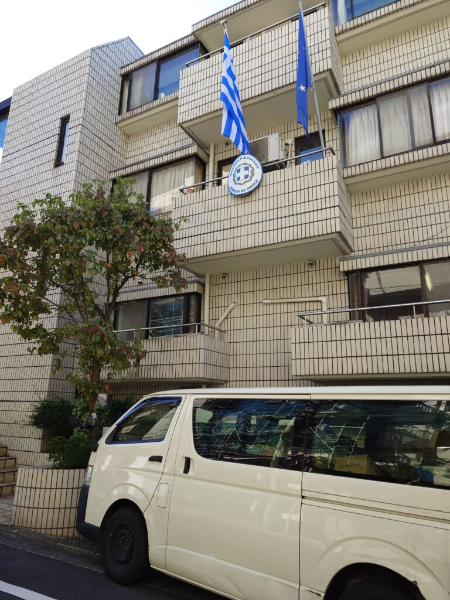
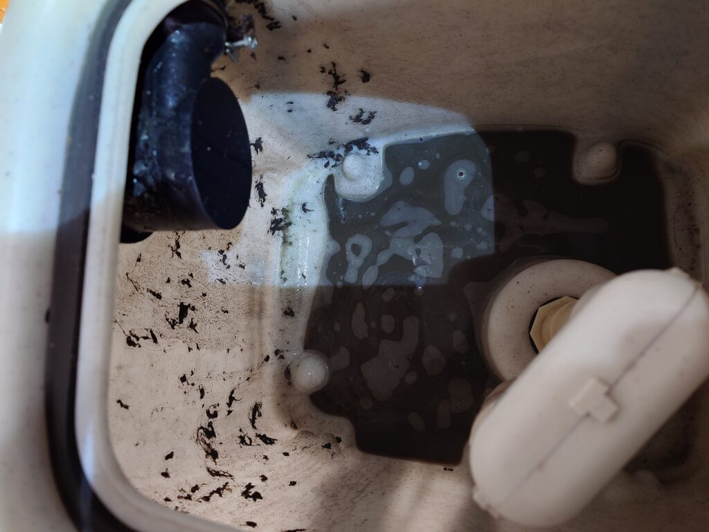
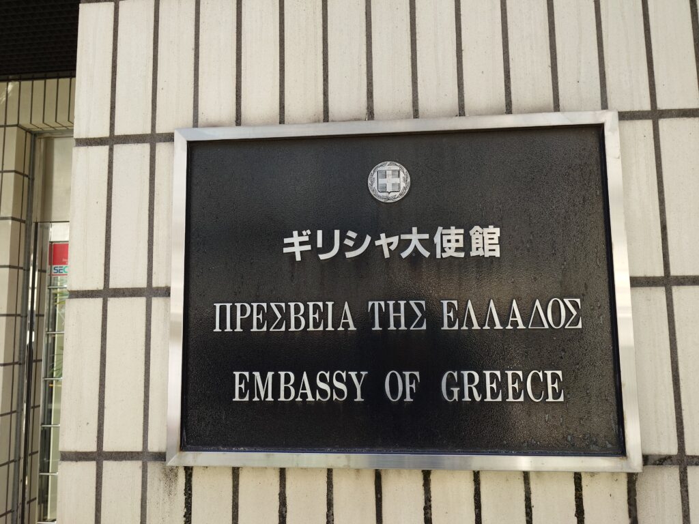

西麻布 ギリシャ大使館様のフロア床面カーペットクリーニング、ソファクリーニングをしました!



ギリシャ大使館様の床面カーペットクリーニングとソファクリーニングを実施しました!ギリシャ国家予算で承認された経費でクリーニングなさるとの事で、クリーニングターゲット状況を伺いに行く時からDAIZENチームとしては（日本代表なので）かなり緊張しました。大使館様につき、内部の写真などはお見せ出来ないのですが、床面カーペットクリーニングは通路、各室のオールフロアを3フロア分、5人がけ応接ソファは4セット分を2日間掛けて可能な限り綺麗にしました。DAIZENプロフェッショナルクリーニングメソッドに則り、ドイツ製専用薬剤とMADE IN JAPANの大型カーペットリンサー機器、ドイツ製高性能リンサー機器を用いて、ギリシャ大使館様スタッフの皆さまが気になっていらっしゃるシミ汚れ、こぼし汚れ、くすみ汚れ等を可能な限り除去しました。ギリシャ大使館様の内部は、写真ではお見せ出来ないのですが、ヨーロッパの美しい調度品、モチーフ、様々な美しい彫刻や絵画、アテネオリンピックのメダルなど、輝く物が沢山あり、本当にギリシャ神話の国なんだなーと見とれてしまいました。床面もソファも綺麗になって、我々DAIZENチームもホッとしました!
